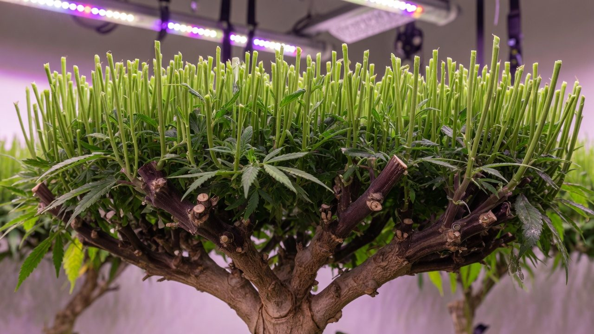
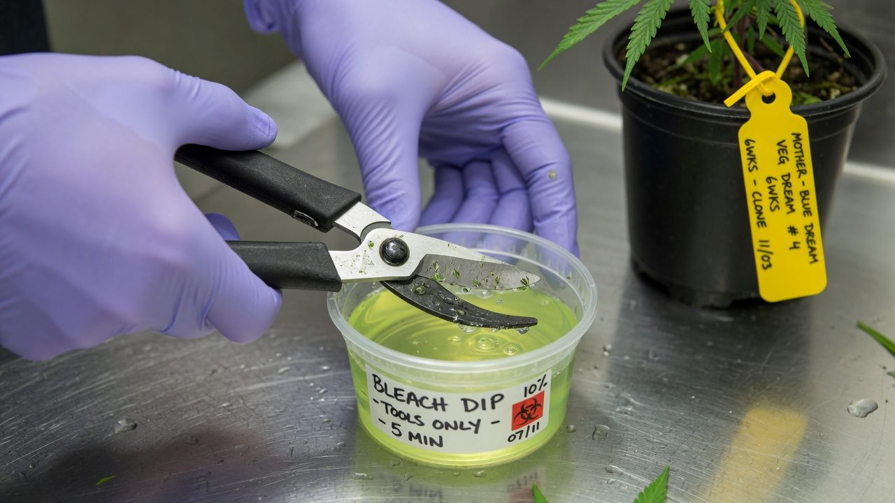
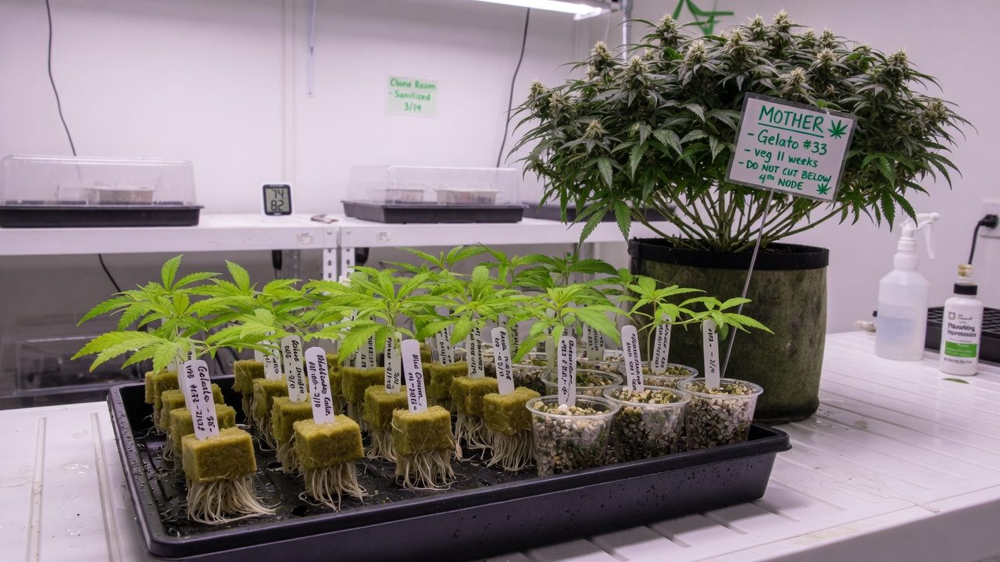

Mother plants: stock management that never runs dry
How to keep cannabis mother plants healthy for the long haul — room setup, feeding, pruning architecture, viroid defence, testing rotation and succession — so every batch starts from a plant you can actually trust.
What a mother plant is and why it runs the whole grow
A mother plant is a plant you keep permanently in leafy growth and never flower. Her only job is to supply cuttings — genetically identical copies — on schedule. Every plant that ever reaches your flower room started as a piece of her.
The formal horticulture word is stock plant; growers say mother. Either way, the deal is the same: you hold one plant back from production and spend light, space and labour on her, and in exchange every batch starts uniform, known and on time. She is the factory, and the flower rooms are the shop that sells what the factory makes.
That position — upstream of everything — is why mother management is worth doing properly. A weak, sick or mislabeled mother doesn't cost you one plant. It costs you every cutting she produces, and you usually find out weeks or months later, after the problem has been multiplied across a whole room. Mother problems are the compound interest of growing: small, quiet, and ruinous by the time they're visible.
Anyone keeping their first mother, through to operators running a stock room against a production calendar. This paper is about the plant you cut from. The cutting technique itself — blades, gel, domes, humidity — is covered in the cloning guide; keeping the room clean is the IPM hygiene guide.
Accuracy, self-review, and grain-of-salt notes
We've gone to great lengths to keep these guides honest. One of the main ways we do that is self-review: we actively look for claims that are subjective, only lightly backed by literature, or based on grower practice rather than a controlled study — and we call those out instead of dressing them up as settled science.
Often there simply is no paper for the decision you're making. In those cases we're drawing on what other growers report and what has worked in our own rooms. That can still be useful — but it is not a lab proof. Do what works for your plants, your room, and your meters. If a table disagrees with your crop, believe the crop and log the difference.
- Core definitions and measurement units used in the paper
- Safety-critical limits where occupational or standards sources are cited
- Numeric stage targets (light, climate, feed) as starting bands, not laws
- SOPs that work in many rooms but need your genetics and meters
- Any single-number 'guaranteed' yield or potency claim without a multi-site trial
- Controller setpoints copied from another facility without re-calibration
See something glaringly wrong? Tell us and we'll fix it. Please open a GitHub issue with the paper name and what looks off (include a source if you have one): Report an accuracy issue. Local law, labels, and licences always override any recipe here. Inline notes labelled grain of salt flag the highest-risk over-trust points in the text.
The whole job on one page
If you only read one section, read this one. Everything after it is the why and the how.
Five rules carry most of the value:
- Protect the photoperiod with margin. Flower initiation has been recorded at photoperiods up to 14 h, and in some cultivars 15 h[1]. 18/6 exists to make timer faults and light leaks survivable.
- Feed for shoots, not for show. A mother is farmed for firm, pencil-thick regrowth. The dark, droopy, overfed look produces cuttings that wilt and stall.
- Build the frame once, then farm the regrowth. Architecture decides cutting count more than feed or light do.
- Assume hop latent viroid is hunting you. Roughly 90% of surveyed California facilities carried it[11]. Blade discipline plus a testing rotation is the entire defence.
- Replace on data, with overlap. A candidate runs alongside the old mother and proves itself before anything gets culled.
Keep a genetically known, pathogen-tested plant in permanent vegetative growth, and turn her into a predictable weekly stream of cuttings without ever letting her tell you a lie.
Eight words that make the rest read plainly
Mother-room talk borrows from horticulture, virology and factory scheduling. These eight terms cover it; everything else is defined where it appears.
The room: 18/6, moderate light, boring climate
Photoperiod is the load-bearing wall. Photoperiod-dependent cannabis initiates flowering when the dark period gets long enough, and the threshold is closer than most people think: in a six-photoperiod trial, every cultivar tested initiated flowers at photoperiods up to 14 h of light, and some began initiating at 15 h[1]. An 18 h day is not a magic number — it is a 3–4 hour safety margin over the worst-case switch point.
A mother that starts flowering is a genuine mess: you lose weeks reverting her (re-vegging is slow and the regrowth comes back twisted), and any cuttings taken while she is transitioning root and grow erratically. Mother rooms rarely fail photoperiod on purpose — they fail by a dead timer channel, a contactor stuck off, or light bleeding through a doorway from a flowering room next door. Audit the dark period monthly: stand in the room, lights out, five minutes, and fix any glow you can see.
The 18/6 vs 24/0 debate: both keep photoperiod cultivars vegetative. Continuous light costs about a third more in energy, and the practitioner arguments for giving a dark period — root growth, recovery — are weakly evidenced in either direction, so treat them as preference, not fact. 18/6 is the default because it works and costs less. One genuine caveat: autoflowering genetics cannot be mothered at all — they flower on age, not photoperiod, and no light schedule will stop them.
Why moderate light and not flower-room intensity? Vegetative cannabis will happily use far more — growth kept responding across a 135–1430 µmol trial range — but light also reshapes the plant: internode length and leaf size shrink steadily as intensity rises[4]. Run a mother at 900+ µmol and the regrowth comes back short, tight and squat — compact is great for a production plant, and miserable to cut 8–15 cm shoots from. Run her under ~150 µmol and shoots come thin, stretched and weak, with the low carbohydrate reserves that root poorly. 300–500 µmol is the working band where regrowth is fast and shaped like cuttings.
Climate: nothing exotic. Around 22–26 °C days, roughly 55–70% relative humidity, gentle continuous air movement (practitioner convention). The mother room should be the most boring room in the facility — every stress event shows up two weeks later as a batch of cuttings that roots at 60% instead of 90, and you will struggle to connect the two.
Feeding a cutting factory: nitrogen-forward, never lush
Mother nutrition has a different goal from flower nutrition. You are not growing buds and you are not even really growing a plant — you are farming stems and growing tips, continuously, from the same root system, for months. That means a vegetative, nitrogen-forward feed, held at moderate strength.
The nitrogen number has actual research behind it: in a five-level dose trial on medical cannabis under long days, 160 mg/L N was the optimum for vegetative growth. At 30 mg/L plants were severely deficient — stunted and yellowing — and at 240–320 mg/L growth went backwards, with smaller, dark-green plants showing classic over-supply[2]. More nitrogen is not more shoots. There is a hill, and the top of it is lower than most feed charts assume.
Here is the part that catches people: what makes a cutting root is not nitrogen, it is carbohydrate. Classic stock-plant work found rooting is limited primarily by the carbohydrate status of the cutting; nitrogen matters, but as the secondary factor[5]. An overfed mother pushes soft, watery, dark shoots — big drooping leaves, hollow stems — that look magnificent and then wilt flat in the dome and root late or never. Firm, pencil-thick, slightly hungry-looking regrowth is the factory spec.
| Parameter | Working range | Basis |
|---|---|---|
| Nitrogen | 150–200 mg/L, centred on ~160 | Dose-response trial optimum[2] |
| Feed EC | 1.4–2.0 mS/cm | Practitioner convention; watch the plant, not the chart |
| pH | 5.8–6.2 (coco / rockwool) | Practitioner convention |
| Irrigation | Steady, small drybacks, no drought cycling | Stress now = poor rooting in 2 weeks |
| Day before a cut | Water well; no foliar sprays | Turgid, dry-leaved shoots handle and root best |
Your real feedback loop is the rooting percentage of her cuttings, batch over batch. If strike rate drifts down over two or three batches and pests and viroid are ruled out, audit the feed before you reach for anything exotic — the fix is usually less: less N, less EC, firmer shoots.

Build the frame once, then farm the regrowth
Cutting count is mostly architecture, not vigour. A mother left to grow naturally makes one dominant leader and a handful of weak laterals — a Christmas tree, and a terrible factory. The fix is the same trick hedge-layers and fruit growers use: remove the leader early, force the plant wide, and keep it flat.
The mechanism is apical dominance — the top shoot chemically suppresses the shoots below it. Cut the top off (topping) and the suppression lifts: the side shoots below the cut all push at once. Do this once to the young plant, then once to each of the released side branches, and you have converted one growing point into eight to twelve. Those become the permanent frame; everything above them is crop.
- 1Establish (weeks 0–2)Start from your best tested clone — the mother inherits everything, good and bad. Transplant, let her root out and settle.
- 2First top (week 2–3)Top above the 4th–5th node. The plant answers with 4–6 strong side shoots.
- 3Build scaffolds (weeks 3–5)Select the best 4–6 laterals as permanent scaffolds; top each once so they fork. Remove the rest.
- 4Open the centre (ongoing)Strip weak, inward-facing shoots so light and air reach the middle. A shaded centre grows the thin, stringy shoots that root worst.
- 5First harvest (week 5–6)The tips you would prune anyway are your first cuttings. From here, the plant is in production.
Harvest rules keep the factory running: cut each shoot above its first node so the stub regrows two shoots (the hedge gets denser every pass); take at most about half the canopy in one pass; and leave every scaffold with working leaves — a fully stripped branch stalls instead of regrowing. Expect a 2–3 week regrowth cycle between full passes (practitioner convention).
Cut with the finished cutting in mind. The propagation research says a cannabis cutting roots best with three or more fully expanded leaves left intact — and that trimming leaf tips, the classic nursery habit, dropped rooting success from 71% to 53%[6]. It also found position barely matters: cuttings from apical (top) and basal (lower) shoots rooted about the same[6]. So harvest the whole hedge, not just the pretty tips — but grow shoots big enough to carry three real leaves.
There is no good published number — it depends on cultivar, pot size and frame. Practitioner ballparks: a compact mother in a 10–15 L pot gives roughly 15–30 cuttings per pass; a large production mother in 30–50 L can give 50–100+. Treat these as planning starting points and measure your own plants — your records beat anyone's ballpark within two months.
Scheduling mothers against production demand
Mother count is a supply-chain calculation, not a vibe. Work backwards from the flower room: how many plants does each flip need, and when? Then inflate for losses. Not every cutting roots, and not every rooted clone is worth vegging — so take 15–40% more cuttings than the plant count you actually need, exactly as in the cloning guide.
| Step | Number | Working |
|---|---|---|
| Plants to flower | 100 | The target the room actually needs |
| Veg cull (~10%) | keep 110 | Weak and slow clones get binned at transplant |
| Rooting rate (~85%) | take ≥130 | 110 ÷ 0.85 — a realistic strike rate, not a brochure one |
| Round up + buffer | take 140 | Overage costs cents; a short flower room costs a cycle |
Then divide by output: mothers needed = cuttings per flip ÷ yield per mother per pass. If mid-size mothers give ~35 cuttings a pass and you need 140 per flip, that is four mothers — so run five. The spare is not optional: it is what lets you retire, rest or quarantine a plant without missing a flip.
Stagger the harvests. Split the bank into A and B cohorts and alternate passes so no mother is stripped hard twice in a row — this keeps every pass inside the take-half rule, and it gives you a built-in diagnostic: if both cohorts' rooting slips together, suspect the room; if one cohort slips alone, suspect those plants.
A smaller bank of well-run, well-tested mothers on a stagger out-produces a crowd of neglected ones — and every extra plant is another thing to water, prune and test on rotation[3]. Size the bank to the calendar, not to comfort.
Do mothers wear out? What the genetics actually say
Grower folklore says a mother 'degrades' and should be replaced every 6–12 months. Plenty of operators, meanwhile, hold the same mother for five-plus years and swear she is identical. Both camps are pointing at something real — they are just pointing at different mechanisms.
Somatic mutation is real. Plants do not separate their reproductive cells the way animals do — every cell that divides can pass a copying error to everything grown from it. Deep whole-genome sequencing of a single cannabis plant found measurable genetic mosaicism within one individual: the top, middle and bottom of the same plant were not genetically identical[7]. The study was motivated by exactly the folklore above — growers reporting clonal lines that lose vigour and potency over time[7].
But the follow-up work reframed the whole debate: across 70 micropropagated clones, mutation load tracked the number of propagation cycles — almost perfectly linearly (r > 0.92) — and not chronological age[8]. Clones of the same calendar age carried very different mutation loads depending on how many times they had been re-propagated. Every cut-and-regrow round is a burst of cell division, and cell division is where copying errors happen.
What actually degrades long-held mothers, in practice, is usually not the genome: it is accumulating pathogens (the next two sections), a root-bound pot, an exhausted woody frame, or care that drifted. All of those are testable and fixable, and none of them is 'age'. Epigenetic change — heritable gene-expression drift without sequence change — is also documented in clonal cannabis populations, but its contribution to lost vigour is not yet settled; treat it as an open question, not a scheduling rule.
Keep a mother for as long as she (a) tests clean and (b) her cuttings' rooting rate and downstream performance hold steady in your records. Replace on evidence, not anniversaries. And when you do re-mother, start from low-generation, tested material — not from the far end of a long clone-of-clone chain[8].
The mother room is a pathogen amplifier
Whatever lives in the mother room ships to every room downstream, on schedule, with a courtesy label on the tray. Spider mites, root aphids, fungus gnats, powdery mildew, root-rot organisms — the mother room is the reservoir that re-seeds them all, which is why IPM effort concentrated there pays off everywhere (see the IPM SOP).
- Blades and scissors — sap-to-sap contact, the number one route for the pathogen that matters most.
- Hands and gloves — change gloves between plants on cut days, not between rooms.
- Shared or recirculated irrigation — pathogens have been detected moving plant-to-plant through nutrient solution and run-off[9]. Mothers should never share a recirculating loop or a flood table.
- Benches, trays and cans — viroid RNA has been recovered from bench surfaces and watering cans in working facilities[9].
- The cuttings themselves — the whole point of the room, and the perfect courier.
Three habits close most of the routes: mothers get dedicated tools that never visit other rooms; work runs cleanest-first (mothers before veg, veg before flower, never backwards through a dirty room); and anything that touches sap gets sanitised or swapped between plants, not between benches. Then there is the organism that turned all of this from good practice into survival — next section.

Hop latent viroid: the quiet destroyer of stock
Hop latent viroid (HpLVd) is a bare, circular strand of RNA about 256 nucleotides long — no protein coat, no cell, a fraction the size of a virus[9]. It was first tied to failing cannabis crops in California in 2019, as the cause of what growers had been calling dudding[10]: plants that look normal through veg, then finish small and brittle with poor trichome set and badly reduced potency.
The scale is why it leads this paper. A 2021 industry survey built on roughly 200,000 tissue tests found about 90% of California cannabis facilities carried HpLVd, with around 30% of plants affected in contaminated sites[11]. Reported losses in dudded plants run to 50–70% of THC content[11], industry estimates put the annual cost near US$4 billion[12], and sampling reported by researchers found roughly 40% of flower on Canadian dispensary shelves testing positive[12]. This is not a rare disease; it is the default state of untested stock.
The word latent is the trap: most infected plants show nothing[11]. And a mother plant is the viroid's perfect host — long-lived (time to acquire it), cut hundreds of times a year (sap exposure at every pass), and upstream of everything (every cutting inherits it). The viroid has been detected in fully asymptomatic stock plants and in the rooted cuttings taken from them[9]. One quiet mother means months of infected clones, invisibly.
Transmission, measured: mechanical spread via sap and tools is primary[11][9], but the viroid also moved root-to-root between plants sharing hydroponic nutrient solution within about two weeks, and was recovered from recirculated and run-off solution, bench surfaces and watering cans[9]. After entering a cut stem it reached roots in 2–3 weeks but foliage only at 4–6 weeks[9] — which is why a leaf test can pass a freshly infected plant, and why root sampling and re-testing exist (next section).
Tool protocol: the gold standard is a fresh single-use blade per mother. Failing that, a 10% household-bleach dip between plants[12] — bleach and hypochlorous acid degraded viroid RNA in sap in testing, where quats and most 'gentler' sanitisers did not reliably[9]. Two hard truths to go with it: no disinfectant does anything for a plant already infected — infected means cull[9] — and isopropyl alcohol alone is not proven against viroid RNA, so the flame-and-wipe habit is comfort, not control.
In trials, HpLVd spread through the plant faster once plants moved to a 12/12 flowering photoperiod than under continuous light[9]. A mother on 18 h days can carry a low, slow, hard-to-detect infection that only shows its teeth downstream in flower. 'My mothers look clean' and 'my mothers are clean' are different sentences — only a test connects them.
Indexing: a testing rotation that keeps the bank clean
Indexing is the clean-stock habit of testing every stock plant on a fixed rotation, so that 'she tested clean' always has a date on it. In cannabis the workhorse assay is RT-qPCR for HpLVd, run from a small tissue sample[12] — cheap enough now that the rotation, not the test, is the discipline.
The cadence that industry testing labs converge on: every mother, every 4–6 weeks[3], and always before a big cutting day rather than after it[12]. Sample root tissue where possible — the viroid concentrates there earliest and most uniformly, making roots the most reliable single sample[3][9] — and take material from more than one point on the plant, because viroid distribution is uneven and a single lucky sample can pass an infected plant[3].
Intake is the front door, and it is where most banks get burned. New genetics — a bought-in clone, a swap, a rescue — is the single most common way HpLVd enters a facility. Quarantine everything: separate room (or at minimum a separated bench with its own tools), test on arrival, hold 2–4 weeks, and test again before it touches the bank. The re-test is not paranoia: systemic distribution takes around six weeks, so an early sample from a just-infected plant can genuinely test clean[12].
Keep records like they are part of the plant: per-mother ID, test dates and results, cut counts, and per-batch rooting %. The rooting trend is your free continuous assay — a mother whose clones' strike rate slides ten points over three batches is telling you something the last quarterly test hasn't caught yet.
Isolate the plant immediately. Re-test to confirm — fresh sample, roots. Trace every plant the same tools touched since the last clean test and test those. Cull confirmed positives: bag the plant at the bench and carry it out sealed, don't walk loose infected material through the facility. Elite genetics can sometimes be rescued through meristem tissue culture — averaging ~41% pathogen-free recovery, anywhere from 0–100% by genotype[9] — but that is a months-long lab job (see tissue culture), not a way to save production stock this cycle.

Replacing a mother without dropping a batch
Mothers are replaced for five reasons: a confirmed pathogen (immediate, no debate); a rooting rate that trends down across three or more batches with other causes ruled out; a frame gone woody and slow after many months of harvest; a root-bound pot that feeding can't compensate; or simple space economics. Only the first one is urgent. Everything else earns a planned succession — and succession has a shape.
- 1Select the donorTake the replacement cutting from the best scaffold of a mother that is testing clean — or from your lowest-generation tested backup. The candidate inherits everything.
- 2Build the candidateRoot it and build the frame exactly as in section 06 — expect ~6 weeks before it produces meaningfully.
- 3Test twice during buildqPCR at rooting and again before it enters service. A candidate is not a mother until it has two clean results.
- 4OverlapRun old and new side by side for at least one full cutting cycle. Compare rooting % of both cohorts head-to-head.
- 5Retire the old plantCull, bag and remove; strip and sanitise her station — pot, tray, stakes, drippers — before anything else uses it.
The overlap is the insurance policy — never cut over cold-turkey. If the candidate's cuttings underperform, you still have the incumbent; if she matches, you cull with confidence. And keep a second copy of every cultivar you care about at all times — a backup mother in another room, or a culture in a tissue-culture bank[13]. A cultivar with one living copy is one fusarium pot or one positive test away from extinct.
Two maintenance notes that extend service life: root-bound decline responds to repotting or root-pruning on a schedule rather than waiting for symptoms (practitioner convention). And re-mothering — starting a fresh mother from the old one's best shoot — resets her architecture and her pot, but it does not reset her pathogens or her accumulated mutations: whatever she carries, the new plant carries[8]. Test before you promote.
Clone-from-clone: running without mothers
Some operations skip dedicated mothers entirely: each round, they take the next batch of cuttings from production plants in early veg, just before those plants flip to flower. The cuttings root while the donors finish. No mother room, no mother labour, a whole room's rent back. It is a real system with a real cost structure — and a real failure mode.
The honest evidence first: it works, mechanically. 'Retip' cuttings — cuttings taken from recently rooted cuttings — rooted at 76–81% even without hormone, and the resulting plants finished comparably to stem-cutting plants, with no change in cannabinoid content[14]. A generation hop, by itself, does not wreck a crop.
The problem is not any single hop — it is what the chain accumulates:
- The mutation ratchet. Mutation load rises with every propagation cycle[8]. A mother bank holds every batch at generation 1; a year of clone-from-clone is 15–25 generations, every one a fresh roll of the dice, with no reference plant to check drift against.
- The pathogen ratchet. With no long-lived plant, there is nothing to index. Your 'stock' is always two weeks from flowering, so there is no time for a quarantine-and-retest cycle — and an HpLVd hit anywhere in the chain propagates forward invisibly[11].
- Selection drift. Whoever takes cuttings picks the biggest, fastest-looking donors. Over many generations that quietly selects for stretch and speed over quality (practitioner observation — unproven, but widely reported).
- No way back. A mother bank can restart any batch from reference. A chain that goes bad — infected, drifted, or mislabeled — is simply gone, along with the cultivar.
The verdict: clone-from-clone is a legitimate bridge — during a build-out, for short runs, for cultivars you plan to drop — provided every donor round gets tested. As the permanent plan for genetics you care about, it is a slow-motion loss. The middle path many operators land on: a tissue-culture bank or one modest, well-tested mother per keeper cultivar as the anchor[13], plus clone-from-clone for volume in between.
How mother programmes die
Mother programmes rarely die loudly. They die in one of six quiet ways, most of them preventable with the habits already covered.
One latent HpLVd mother plus shared snips. Every pass infects the next plant; nothing looks wrong until a flower room duds months later. Counter: blade per plant, root-sample qPCR every 4–6 weeks[3].
One mother per cultivar. One root-rot pot, one positive test, one dropped tray — and the genetics are extinct. Counter: two copies, separate rooms, or a tissue-culture backup[13].
A proud, dark, overfed mother whose cuttings flop in the dome and rot. Rooting runs on the cutting's carbohydrate, not its nitrogen[5]. Counter: moderate N and EC, firm shoots, watch the strike rate.
Eighteen months in a 12 L pot. Vigour fades so gradually nobody sees it, and it gets blamed on 'age'. Counter: repot or root-prune on schedule; track cuttings-per-week so decline shows up as a number.
A year of clone-from-clone with no tests and no reference. The cultivar 'isn't what it used to be' and nobody can prove why, or get it back[8]. Counter: keep an anchor — mother or culture — for every keeper.
Replacing proven, clean, productive mothers every six months on folklore — while blade hygiene, the thing that actually kills stock, goes unmanaged. Counter: replace on evidence[8]; spend the saved effort on testing.
Symptom → cause → fix
Diagnose from the symptom, check the likely cause, act, and give it one batch cycle before judging the fix. Most mother problems announce themselves through the cuttings first.
| Symptom | Likely cause | What to do |
|---|---|---|
| Rooting % slides batch over batch, mother looks fine | Early HpLVd; or soft overfed growth; or root-bound decline | Root-sample qPCR first[3]; then audit EC/N down; then check the pot |
| Pistils or pre-flowers on a mother | Photoperiod fault: dead timer, light leak, schedule under ~15 h | Fix to a verified 18 h; dark-room audit; take no cuttings until regrowth is clean[1] |
| Cuttings soft, stretchy, wilt fast in the dome | Feed too rich, light too low — lush growth, thin reserves | Drop EC 0.2–0.4; raise PPFD toward 400–500; firm shoots return in 1–2 passes[5] |
| Pale mother, thin shoots, slow regrowth | Underfed N, or root-bound / root disease | Lift N toward ~160 mg/L[2]; inspect the root ball while you're at it |
| Downstream flower rooms dudding; mothers test-negative on leaves | Latent HpLVd sitting below leaf detection | Re-test from roots, multiple points per plant[3][9]; treat leaf-negative as unproven |
| Pests reappearing in every clone batch | The mother room is the reservoir | Treat and monitor mothers first; inspect before every cutting pass — see the IPM SOP |
| A mother dies or tests positive and she was the only copy | No backup existed | Salvage via meristem culture if the genetics justify months of lab work[9]; then fix the system: two copies, always |
The mental model: a living backup that must prove it restores
Treat a mother plant exactly like a backup drive. Nobody trusts a backup because it looks fine on the shelf — you trust it because you test restores. The mother-room translation: the restore test is her cuttings' rooting rate, batch over batch. The integrity check is the qPCR rotation. The off-site copy is the second mother or the tissue-culture bank. The retention policy is evidence-based replacement with overlap. Run those four and the factory never runs dry.
- 18/6 is a safety margin, not a magic number. Initiation has been recorded up to 14–15 h[1] — protect the timer and hunt light leaks.
- Moderate everything. ~300–500 µmol, ~160 mg/L N[2], moderate EC. The best-looking mother is rarely the best-performing one.
- Architecture is output. Top young, build 4–6 scaffolds, harvest half the hedge above the first node, every 2–3 weeks.
- The blade is the vector; the test is the defence. Fresh blade per plant, root-sample qPCR every 4–6 weeks[3], quarantine and test everything new twice[12].
- Cycles age a line; calendars don't. Mutation load follows propagation cycles[8] — keep clean proven mothers, replace on evidence, and never run without a second copy.
From here: the cloning guide covers turning each harvested shoot into a rooted plant, and the tissue culture paper covers the lab-side version of everything in this one — clean-stock banking, meristem rescue and long-term storage[13].
References
- Ahrens A, Llewellyn D, Zheng Y (2023). Is twelve hours really the optimum photoperiod for promoting flowering in indoor-grown cultivars of Cannabis sativa? Plants 12(14):2605. (Flower initiation occurred in all tested cultivars at photoperiods up to 14 h, and in some at 15 h; 18 h was the vegetative baseline.) https://pmc.ncbi.nlm.nih.gov/articles/PMC10386198/
- Saloner A, Bernstein N (2020). Response of medical cannabis (Cannabis sativa L.) to nitrogen supply under long photoperiod. Frontiers in Plant Science 11:572293. (160 mg/L N was optimal for vegetative growth; 30 mg/L was severely deficient and 320 mg/L depressed growth.) https://www.frontiersin.org/journals/plant-science/articles/10.3389/fpls.2020.572293/full
- TUMI Genomics. When should you test for HLVd? Early clone screening is best. (Recommends testing mother plants every 4-6 weeks, sampling root tissue as the most reliable material, and sampling multiple points per plant.) Industry technical guidance. (industry/manufacturer or non-journal source) https://www.tumigenomics.com/blog/when-should-you-test-for-hlvd/
- Moher M, Llewellyn D, Jones M, Zheng Y (2022). Light intensity can be used to modify the growth and morphological characteristics of cannabis during the vegetative stage of indoor production. Industrial Crops and Products 183. (Canopy PPFD of 135-1430 µmol tested; internode length and leaf size decreased as intensity rose.) https://www.sciencedirect.com/science/article/abs/pii/S0926669022003922
- Druege U, Zerche S, Kadner R (2004). Nitrogen- and storage-affected carbohydrate partitioning in high-light-adapted Pelargonium cuttings in relation to survival and adventitious root formation under low light. Annals of Botany 94(6):831-842. (Stock-plant nitrogen affects rooting, but carbohydrate status of the cutting is the dominant factor.) https://academic.oup.com/aob/article/94/6/831/264506
- Caplan D, Stemeroff J, Dixon M, Zheng Y (2018). Vegetative propagation of cannabis by stem cuttings: effects of leaf number, cutting position, rooting hormone, and leaf tip removal. Canadian Journal of Plant Science 98(5):1126-1132. (Three fully expanded leaves and no leaf-tip removal rooted best; apical vs basal position made little difference.) https://doi.org/10.1139/cjps-2018-0038
- Adamek K, Jones AMP, Torkamaneh D (2022). Accumulation of somatic mutations leads to genetic mosaicism in cannabis. The Plant Genome 15(1):e20169. (Deep whole-genome sequencing of one plant sampled top, middle and bottom found intra-plant genetic mosaicism.) https://doi.org/10.1002/tpg2.20169
- Adamek K, Jones AMP, Torkamaneh D (2024). Somatic mutation accumulations in micropropagated cannabis are proportional to the number of subcultures. Plants 13(14):1910. (Across 70 clones, mutation load tracked the number of propagation cycles, r > 0.92, not chronological age.) https://pmc.ncbi.nlm.nih.gov/articles/PMC11279941/
- Punja ZK, et al. (2025). Transmission, spread, longevity and management of hop latent viroid, a widespread and destructive pathogen affecting cannabis plants in North America. Plants 14(5):830. (Sap infectious ~7 days and dried tissue ~4 weeks at room temperature; root-to-root and nutrient-solution spread; roots positive 2-3 weeks after stem inoculation, foliage 4-6 weeks; meristem culture cleanup averaged ~41%, range 0-100% by genotype.) https://pmc.ncbi.nlm.nih.gov/articles/PMC11902214/
- Warren JG, Mercado J, Grace D (2019). Occurrence of hop latent viroid causing disease in Cannabis sativa in California. Plant Disease 103(10). (First report linking HpLVd to 'dudding' disease in commercial cannabis.) https://doi.org/10.1094/PDIS-03-19-0530-PDN
- Medicinal Genomics. Hop latent viroid in cannabis (application note). (Recommends testing mothers before taking cuttings, ~6 weeks for systemic distribution after infection, 10% bleach tool sanitation; cites ~US$4B annual loss estimate and ~40% HLVd-positive flower in Canadian dispensaries.) Industry technical guidance. (industry/manufacturer or non-journal source) https://medicinalgenomics.com/applications/hop-latent-viroid-in-cannabis/
- Monthony AS, Page SR, Hesami M, Jones AMP (2021). The past, present and future of Cannabis sativa tissue culture. Plants 10(1):185. (Micropropagation as a route to disease- and virus-free clonal plants and long-term germplasm storage; notes culture decline during multiplication.) https://pmc.ncbi.nlm.nih.gov/articles/PMC7835777/
- Kurtz LE, Borbas LN, Brand MH, Lubell-Brand JD (2022). Ex vitro rooting of Cannabis sativa microcuttings and their performance compared to retip and stem cuttings. HortScience 57(12):1576-1579. (Retip cuttings taken from rooted cuttings rooted at 76-81% without hormone and finished comparably, with unchanged cannabinoid content.) https://journals.ashs.org/hortsci/view/journals/hortsci/57/12/article-p1576.xml
Citations marked in-text as [n] map to this list. Primary literature and official guidance except where noted. Cannabis tissue culture is strongly genotype-dependent, verify dilutions, hormone doses and local regulations against the primary sources before relying on them.